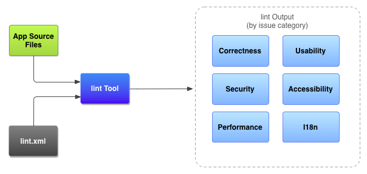
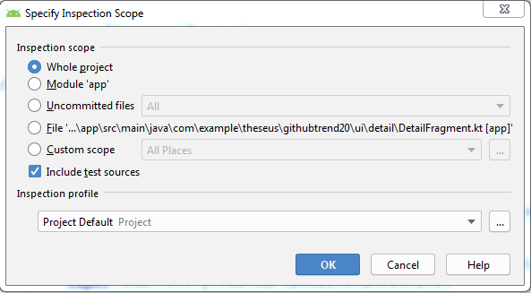
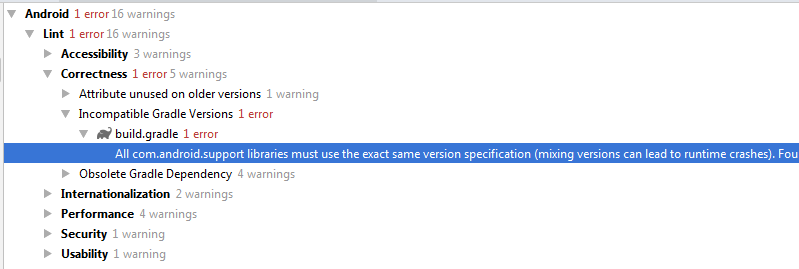
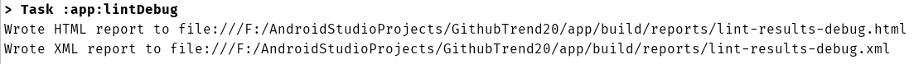
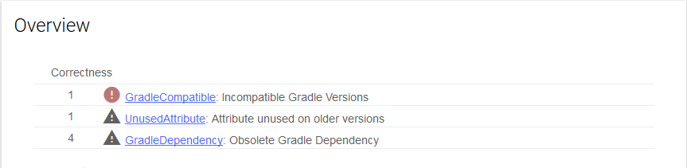

在Android Studio中使用静态代码分析工具
作者：Aanand Shekhar Roy
静态分析（或静态代码分析）是针对某些设置规则对源代码进行的分析运行，甚至在程序运行之前（通常甚至在单元测试之前）。这是一种在没有运行程序的情况下完成的调试，这通常是进行代码分析的第一步。由于分析是针对某些设置规则运行的，因此它也有助于维护开发团队之间的编码约定。你绝对可以在代码审查过程中手动完成，但是人为错误会蔓延，并且不会那么有效或高效。为了解决这个问题，我们现在有了一些令人惊叹的自动化工具，比如lint，它现在嵌入在我们可以使用的Android工作室中。在这篇博文中，我们将使用这样的工具，并将迭代Android项目作为演示。
linting如何工作？
Linting遵循配置文件中定义的规则lint.xml。然后，Lint工具针对源代码文件运行这些规则。请参阅下图以便更好地理解。

在项目中使用lint
使用Android Studio和其他使用终端和gradle的方法有两种方法。
使用Android Studio
有两种方法可以在源代码上运行lint工具。您可以从工具栏分析>检查代码中执行此操作。。然后，它将打开一个对话框，您可以在其中指定运行lint工具的源代码的范围。下面是一张展示这一点的图片。

过了一会儿，Android工作室会在检查结果窗口中显示结果，如下图所示。

使用Gradle
要从Gradle运行lint，可以使用以下命令。
在Windows上： gradlew lint
在Linux或Mac上： ./gradlew lint
请注意，运行上述命令时，默认情况下，gradle会在发布版本上运行lint。为了在不同的构建上运行它，例如。debug，您需要添加构建名称gradlew lintDebug。完成linting后，结果以html和xml格式生成。


请注意，如果您有任何lint错误，Android Studio可能无法生成结果，因此您需要在应用级gradle文件中的以下广告位置添加广告：
lintOptions {
abortOnError false
自定义linting规则
也许您的需求或团队的编码约定与默认配置不同，因此您可以从gradle文件更改设置，如下所示：
lintOptions {
abortOnError false
disable 'ContentDescription'
}
在上面的示例中，我们ContentDescription在整个项目中禁用lint检查警告。如果您不想将其应用于整个项目而只是应用于某些文件，则可以@SupressLint在Kotlin或Java文件以及tools:ignorexml文件上使用注释。查看以下示例：
@SuppressLint("NewApi")
override fun onCreate(savedInstanceState: Bundle?) {
super.onCreate(savedInstanceState)
setContentView(R.layout.main)
如果是XML文件：
<ImageView tools:ignore=“HardcodedText” 记得几分钟前我们说lint工具使用lint.xml配置文件？您可以lint.xml根据需要创建自己的文件并设置规则。在下面的示例中，我们创建了lint.xml文件并设置了一条忽略missing contentDescription警告的规则。
<?xml version="1.0" encoding="UTF-8"?>
<lint>
<!-- Disable the given check in this project -->
<issue id="ContentDescription" severity="ignore" />
</lint>
之后，您需要将引用放在gradle文件中：
lintOptions {
lintConfig file("lint.xml")
}
请注意，在上述情况下，您在lint.xml适用于整个模块中指定的lint规则。如果要为特定路径指定它，可以这样做：
<issue id="ContentDescription" severity="ignore">
<ignore path="src/main/res/values/list_item.xml" />
</issue>
就是这样了！继续在下一个项目中使用这个很棒的工具，向质量代码迈出一步。有关更多信息，请随时访问此链接Lint
最初发表于www.aanandshekharroy.com。